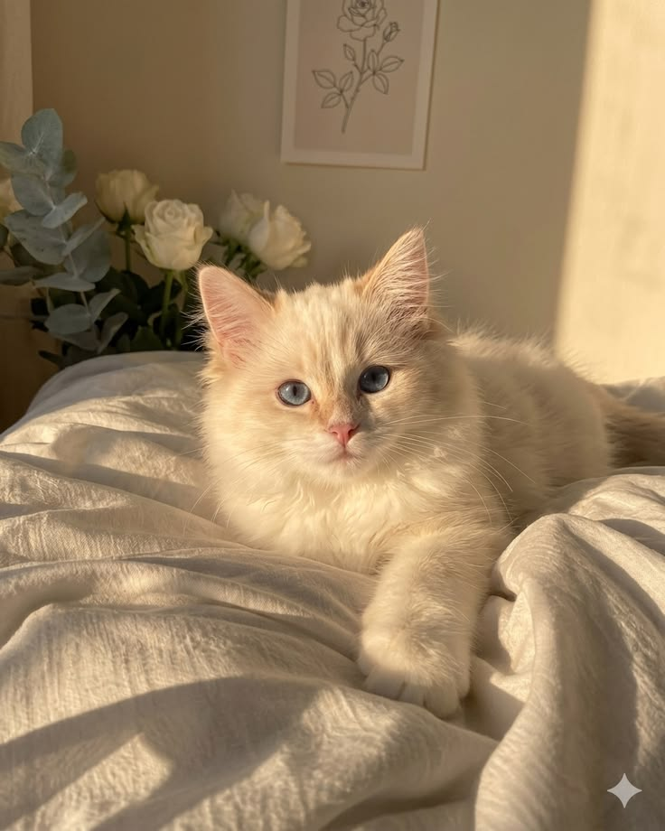

Meet Jerry
Jerry is a sweet, golden furred puppy with eyes full of trust and curiosity. His gentle nature and playful spirit make him the perfect companion for cozy evenings and joyful adventures alike. Jerry loves cuddles, short walks, and being around people who shower him with affection. Adopting Jerry means welcoming endless tail wags, unconditional love, and a loyal friend who will brighten every day.

Meet Tom
Tom is a soft furred kitten with striking blue eyes that sparkle in the sunlight. Calm yet curious, he enjoys lounging in warm spots and greeting you with a gentle purr. Tom’s affectionate personality and graceful charm make him an ideal addition to any loving home. By adopting Tom, you’ll gain a devoted feline friend who fills your space with warmth, comfort, and quiet companionship.